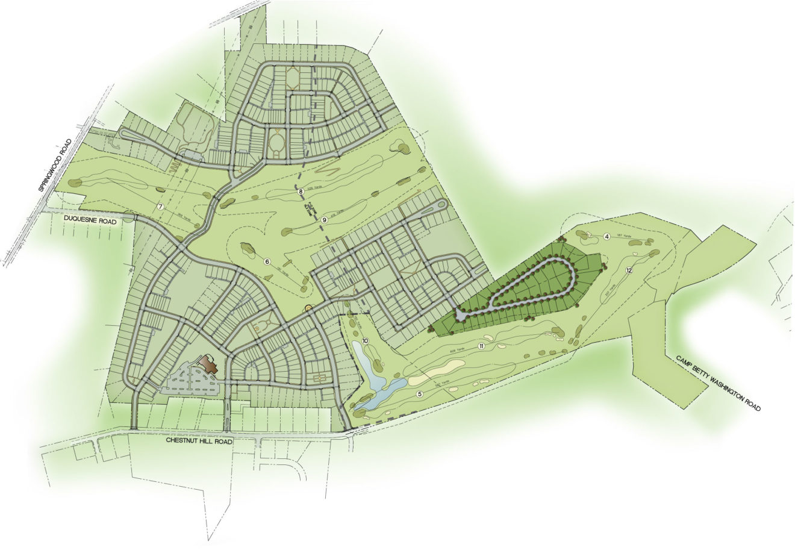

Ecotrunk's dedicated in-house team manages every stage of project development - from evaluating site potential and securing prime locations to initiating construction after obtaining all necessary permits and authorizations. With over a decade of experience across East Africa, we deliver bankable renewable energy projects on time and on budget.
We carefully select the best locations for power generation by conducting comprehensive resource assessments using advanced wind and solar data campaigns. Our team deploys meteorological stations and satellite-derived datasets to model long-term energy production potential with high statistical confidence.
During this phase, we evaluate production capacity against multiple turbine and PV configurations, assess environmental and social sensitivities through preliminary screening, analyse land suitability using GIS-based multi-criteria decision analysis, and conduct a preliminary grid connection assessment to identify nearby substation capacity and line routes.

Ecotrunk rigorously evaluates every project site to understand the full scope of potential impacts on the natural environment and local communities. We commission specialised studies covering flora, fauna, hydrology, archaeology, and socio-economic baseline conditions, all aligned with National Environment Management Authority (NEMA) requirements.
Our team develops robust mitigation measures to minimise ecological disturbance while fostering sustainable local development. We conduct comprehensive community engagement planning, stakeholder mapping exercises, and design benefit-sharing frameworks that ensure host communities are active partners throughout the project lifecycle.
A reliable grid connection is fundamental to any successful renewable energy project. Ecotrunk performs detailed assessments of the existing power infrastructure at the substations where plants will interconnect, evaluating transformer capacity, switchgear condition, protection schemes, and available fault levels.
Our power systems engineers conduct load-flow and dynamic stability studies to determine the network's ability to absorb the new generation. We design the interconnection layout, specify required upgrades, and plan power evacuation routes that comply with Kenya Power and Lighting Company standards as well as the Energy and Petroleum Regulatory Authority (EPRA) Grid Code.

Our engineering team develops optimised plant designs that balance energy yield, capital cost, and site-specific constraints. We perform detailed technology selection - comparing wind turbine classes, PV module efficiencies, inverter configurations, and mounting structures - to identify the configuration that maximises returns under local resource and grid conditions.
Layout planning optimises micro-siting to minimise wake losses and shading while respecting environmental exclusion zones. We produce comprehensive energy yield assessments using industry-standard software (PVsyst, WindPRO, WaSP), develop construction methodologies aligned with local labour and logistics realities, and create phased implementation plans that enable early generation while maintaining flexibility for future expansion.

Land tenure is one of the most critical components of renewable energy project development in Kenya. Ecotrunk collaborates closely with landowners - whether private individuals, community trusts, or government entities - to establish mutually beneficial arrangements. Our team navigates the complexities of land administration, including title verification, encumbrance searches, and family or clan succession matters.
We engage extensively with local communities to build public acceptance through transparent communication, public barazas, and benefit-sharing agreements. Our negotiators structure lease payments, easement rights, access wayleaves, and surface rent agreements that fairly compensate landholders while maintaining long-term project bankability. Every agreement is documented with full due diligence and registered as required under Kenyan law.
Regulatory compliance is paramount to project success. Ecotrunk secures all licences, permits, and authorisations from the relevant Kenyan bodies early in the project lifecycle to prevent costly delays. Our permitting scope includes generation licences from EPRA, Environmental Impact Assessment licences from NEMA, county government approvals for building and planning, and permits from the Water Resources Authority for any water abstraction or diversion.
We also obtain construction permits from the relevant county governments, negotiate community development agreements that satisfy both regulatory requirements and local expectations, and secure wayleave approvals for transmission lines. Our regulatory team tracks every submission through to issuance, maintaining a detailed permitting calendar that aligns with the overall project schedule and financing milestones.
Beyond the core development phases, Ecotrunk also manages the critical commercial and financial processes that transform a consented project into a construction-ready asset: